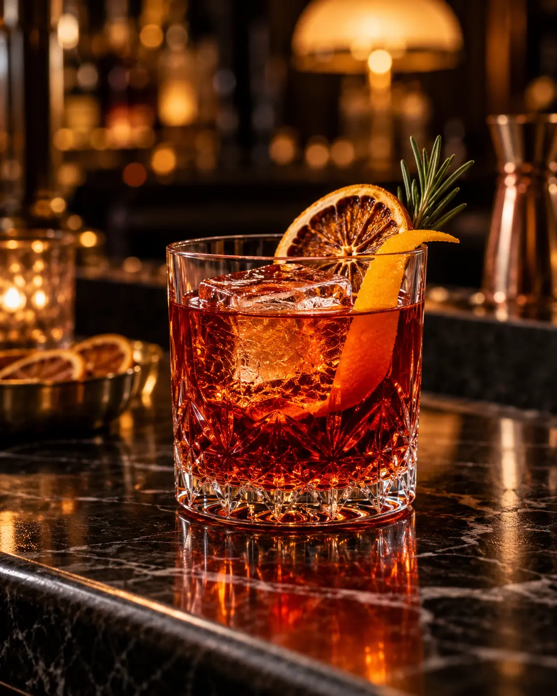
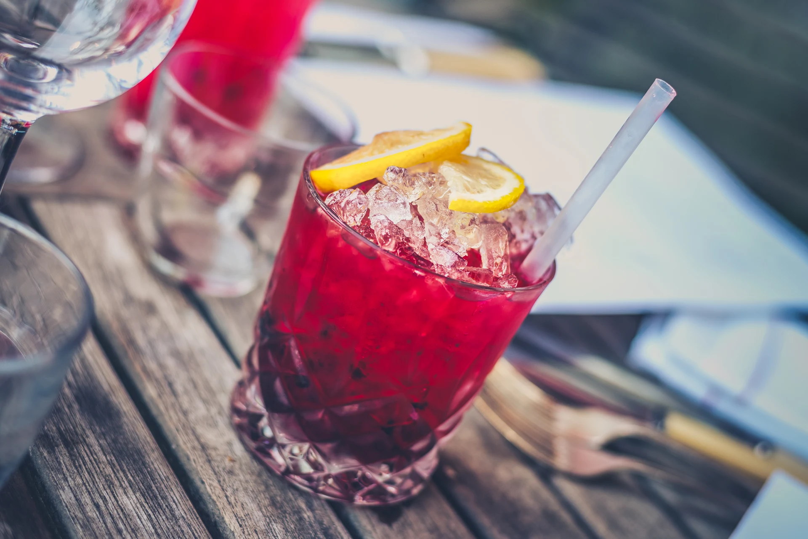

Negroni
Насыщенная итальянская классика: джин, красный вермут и горький аперитив в равных пропорциях.
ТЕМАТИЧЕСКАЯ ПОДБОРКА
Ягодные акценты, хвоя и тёплый свет. Рецепты для праздничного настроения.

Насыщенная итальянская классика: джин, красный вермут и горький аперитив в равных пропорциях.

Клюква, розмарин и игристое вино. Праздничный рецепт для красивой подачи.